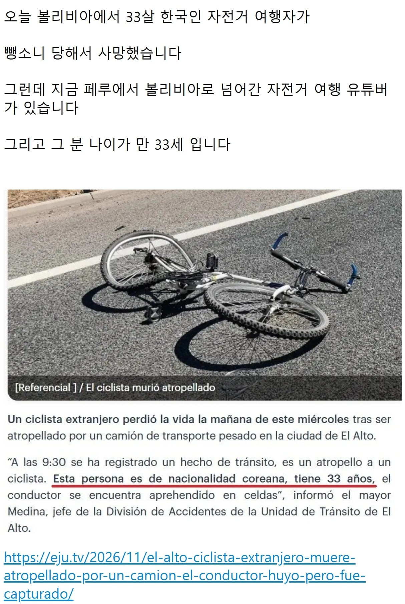
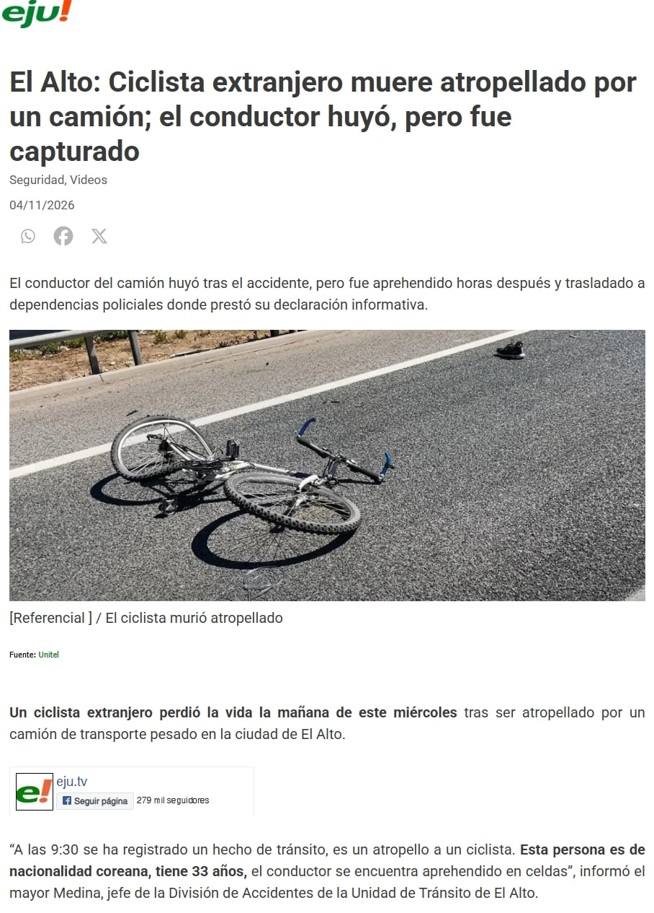

El Alto: Ciclista extranjero muere atropellado por un camión; el conductor huyó, pero fue capturado

여행유튜버갤에서도 인터뷰에 나온
피해자의 자전거가 해당 유튜버께 맞다는 오피셜로 굳어지는 중


El Alto: Ciclista extranjero muere atropellado por un camión; el conductor huyó, pero fue capturado
여행유튜버갤에서도 인터뷰에 나온
피해자의 자전거가 해당 유튜버께 맞다는 오피셜로 굳어지는 중
영상에 나와있잖아
글 수정 전엔 없었음
안타깝네
아이고 구독자인데...
아니 시발 진짜? 저번주까지 잘 보고 있었는데 뭔 일이래 아이고
채널 댓글 진짜 인간언저리도 안되는 새끼들 많네
안타깝네... 삼가 고인의 명복을 빕니다 ㅜㅜ
어 이사람 자전거로 어디 횡단햇던사람 아닌가
허망하구만
멕시코인가 넘어져서 골절상입어서 귀국한거까지 보다가 알고리즘안떠서 못봤는데.
안좋은 소식으로 보게됐네..
아니 미친 말도 안돼
아..... 너무 충격적이다
날벼락이네...안타깝다
볼리비아 그 도로 거지같은곳 아닌가 와일드랜드 배경
영상 잠깐 보고왔는데도 산맥도로달리는게 위험해 보이긴 하네 ㄷㄷ;;
트럭추월 같은거 위험해보이긴함
아 너무 황망하네
미국 종단 재밌게 봤는데 아이고..
한국도 도로 끝으로 바짝붙어가도 병신들이 일부러 들이받을라고 바짝붙으면서 크락샨 존나울려대는게 비일비재한데 하루 40키로 타는동안 그런병신을 3번 만난뒤론 자전거 잘안탐
근데 사진이랑 영상에서 자전거가 다른데 뭐지
영상은 11:11
이미지 밑에 래퍼런스 적혀있넹
사진은 그냥 참고용 사진이고 현지 인터뷰 영상에 사고자전거가 나오는데 저분 자전거였음
안타깝다
꼬레아노가 아니라 꼬레아나인데 죽은건 여자아냐?
GPT한테 물어봤더니
스페인어에서 'nacionalidad(국적)'가 여성명사라서 'coreana'라고 쓰는 거예요. 피해자가 남성이어도 똑같이 표현합니다.
오히려 기사 앞부분에 'un ciclista extranjero(외국인 남성 자전거 운전자)'라고 쓰여 있어서 남성으로 보도한 게 맞아요.
라고 하네요.
그렇구나...
고인의 명복을 빕니다...
나도 최근에 보고 알게 돼서, 와 대단한 사람이다 생각하고 영상 몇개 보고 그랬는데.......
너무 허망하고 슬프다...
누군지도 말안해주면 어케알아